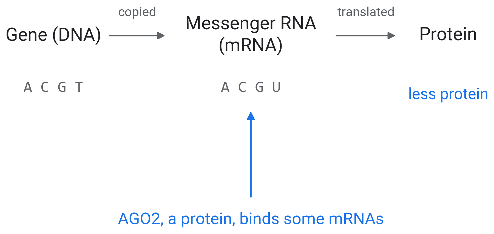
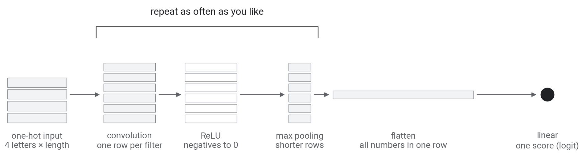

Applications of AI in Biotechnology and Genomics
Part 1: Machine learning and CNNs
AI Days 2026
Faculty of Biotechnology and Food Engineering
Technion Israel Institute of Technology
Mattan Hoory
0.1 About me

During the exchange semester, Sun Moon Lake (日月潭), Taiwan, 2023
0.2 My research
Machine learning for molecular design: from a sequence to how it binds

Triplexis: which DNA sequences an RNA strand binds as a triple helix

Peptides against influenza: screening millions of variants with AlphaFold 3
0.3 Goals
We will
- practice hands-on machine learning to build intuition for how these models work
- look inside models that read sequence
- build a mental model of how to approach sequence-based models in AI
- use coding agents to bridge the gap to the code
We will not
- learn to write code
- learn the fundamentals of ML and deep learning
- learn PyTorch or Hugging Face in depth
- open the transformer
0.4 What you need
- A laptop and a Google account
- Colab with a GPU: Runtime → Change runtime type → T4 GPU
- Notebooks and slides: mathoory.github.io/ai-days-2026-dna-workshop
0.5 Today
| 11:00 |
1. Machine learning and CNNs |
|
| 11:40 |
Break |
|
| 11:50 |
1. Machine learning and CNNs, continued |
01_cnn |
| 12:15 |
2. DNA foundation models |
02_foundation_models |
| 13:05 |
Break |
|
| 13:15 |
3. Shortcuts, controls and fine-tuning |
03_shortcuts_and_controls |
| 13:50 |
Break, end at 14:00 |
|
1.1 RNA and AGO2


1.2 The data
- Bound: 48,095 sites measured by CLIP-seq, an experiment that captures the RNA a protein binds. Unbound: 44,251 random positions in the same genes
- The 40-letter measured site sits at letters 150 to 190
2.1 What is learning?
- Learning: observations → learning → a skill
- Machine learning: data → an algorithm → a skill
2.2 What is a skill?
- A skill improves a performance measure
- Diagnostics: patient data → machine learning → earlier detection of disease
- Today: RNA sequences → machine learning → where AGO2 binds
2.3 Why machine learning?
- Define “tree” and write a program for it: hard
- Learn trees from examples: a 3-year-old can do it
2.4 When to use machine learning?
- There is an underlying pattern to learn
- There is no easy rule to program it
- There are data about the pattern
2.6 Statistics, machine learning and AI
- Statistics: use data to make inferences about a population or a process
- Machine learning: use data to find a function \(g\) that approximates an unknown target \(f\)
- AI: compute something that shows intelligent behaviour
2.7 AI, machine learning, deep learning
2.8 Notation
| Input space |
\(\mathcal{X}\) |
RNA sequences |
| Output space |
\(\mathcal{Y}\) |
1 bound, 0 unbound |
| Training examples |
\(D = \{(x_i, y_i)\}_{i=1}^{N}\) |
92,346 labelled sequences |
| Unknown target |
\(f: \mathcal{X} \to \mathcal{Y}\) |
where AGO2 binds |
| Hypothesis set |
\(\mathcal{H}\) |
all CNNs of one shape |
| Learning algorithm |
\(\mathcal{A}\) |
gradient descent |
| Final hypothesis |
\(g \approx f\) |
the trained CNN |
2.9 The learning flow

2.10 Supervised learning
- Examples \((x_i, y_i)\), \(i = 1, \dots, N\): a sequence \(x_i\) and its label \(y_i\) (1 bound, 0 unbound)
- A model \(f_\theta\) with parameters \(\theta\) predicts \(\hat p = f_\theta(x)\), the probability of bound
2.11 The loss
- Binary cross-entropy: \(\;\mathcal{L} = -\frac{1}{N}\sum_{i} \big[\, y_i \log \hat p_i + (1 - y_i)\log(1 - \hat p_i) \,\big]\)
2.12 Features: chosen or learned
2.13 The sigmoid: from a score to a probability
2.14 Gradient descent
\(\theta \leftarrow \theta - \eta \, \nabla_\theta \mathcal{L}\), on \(\;\hat p = \sigma(w^\top x + b)\) with \(x\) = (G+C fraction, U fraction)
2.15 The learning rate
- \(\eta\) sets the size of each step
2.16 Mini-batches and epochs
- Each step uses a batch of 256 sequences; an epoch is one pass over all 92,346 (360 steps)
2.17 ReLU: the bend between layers
2.18 From logistic regression to a neural network
- A neural network stacks layers of units, with ReLU between them
- A convolutional neural network (CNN): its first layer slides small filters along the sequence (section 4)
3.1 Train, validate, test

3.2 Why not the training loss?
3.3 Drawing the ROC curve
The scores of our convolutional neural network (CNN, section 4) on the 1,000 held-out sequences
3.4 AUROC
- All thresholds together give the ROC curve (receiver operating characteristic)
- AUROC (area under the ROC curve): the probability that a random bound sequence scores higher than a random unbound one
- 0.5 is chance, 1.0 is perfect
- It scores the ranking we care about, on sequences the model has not seen
3.5 Overfitting
- A model that scores much higher on its training data than on held-out data has overfit: it memorised its training examples. Report the held-out score
- Below: logistic regression on how often each 5-letter word occurs in a sequence (1,024 features; more in part 3). Regularised: large weights are penalised, which limits memorising
4.1 One-hot encoding (TODO-1)
- One column per letter, with a 1 in its row; padding columns of 0.25 up to 501
4.2 A filter slides along the sequence
4.3 A filter computes a dot product
- The same 40 weights at every position: weight sharing
4.4 The filter along one sequence
4.5 Channels and pooling
- 10 filters give 10 output rows, channels; max pooling keeps the largest of every 3 positions
4.6 Build your network (TODO-2)

4.7 Training changes the filters
4.8 The training step and the evaluation (TODO-3)
5.1 Which windows does a filter like?
5.2 From hits to a logo
PWM: position weight matrix, the frequency of each letter at each position
5.3 Filter 0 of our CNN (TODO-4)
5.4 Test a logo: insert it into random RNA (TODO-5)
- Insert one filter’s consensus 1 to 7 times. Which control shows that its pattern matters?
5.5 Your turn
Open 01_cnn.ipynb in Colab, select the T4 GPU, run from the top.